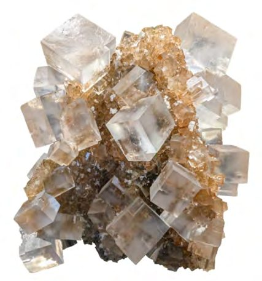
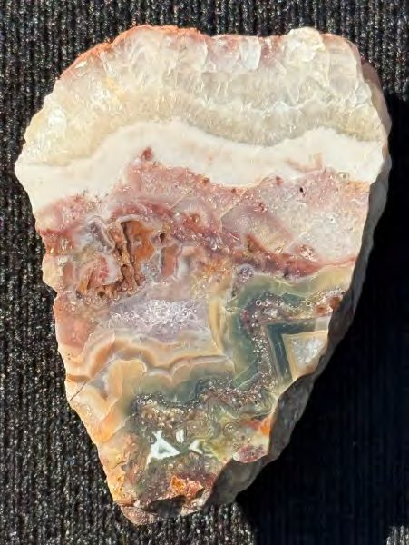
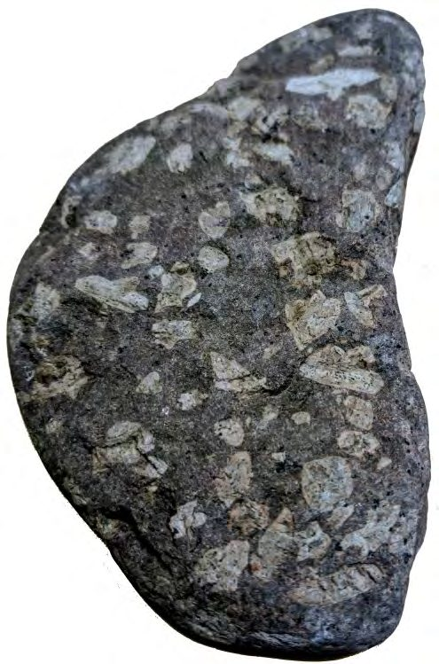
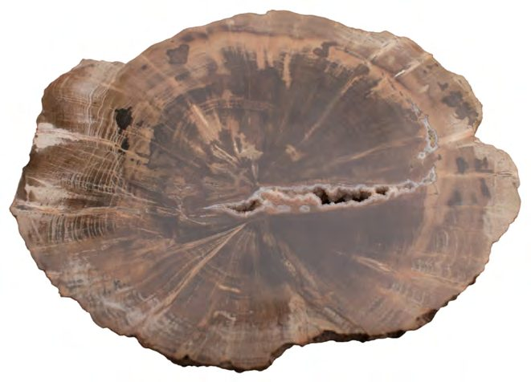
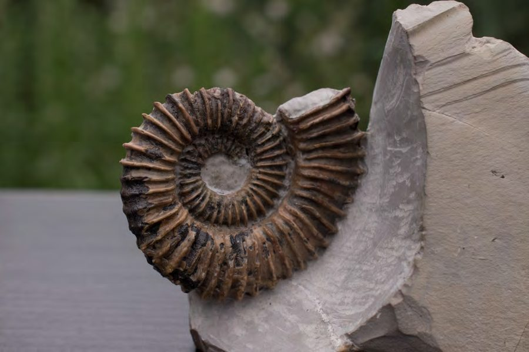
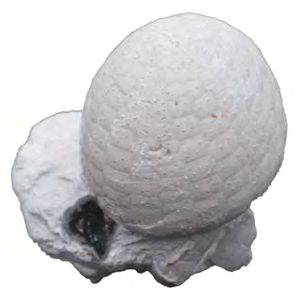
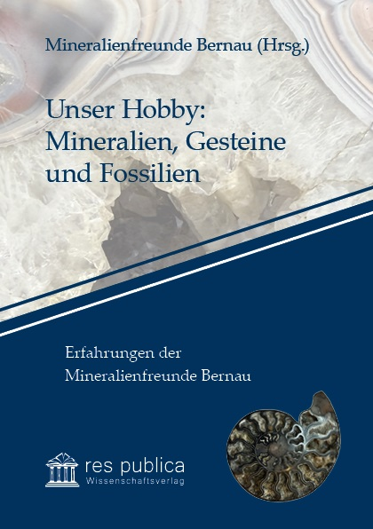

Mineralien
Halit
Steinsalz-Kristallstufe
Seit 1983 treffen sich in Bernau Menschen, die Mineralien, Gesteine und Fossilien sammeln, bestimmen und bearbeiten. Manche halten ihre Funde in der Makrofotografie fest, andere schauen mit der UV-Lampe nach, wie ein Stein reagiert.
Als Bezirksgruppe Bernau der VFMG sind wir die einzige Gruppe der Vereinigung in Brandenburg.
Am 7. Juni 1983 trafen sich neun Steinbegeisterte im Volkskunstkabinett Am Steintor in Bernau und gründeten die Fachgruppe Mineralogie-Geologie beim Kulturbund. Zu den Gründungsmitgliedern zählten Christa und Werner Beck, Jürgen Heinrich, Gerhard Jahnke, Inge und Helmut Mieles, Erwin Pohl, Gondula Schröder und Dieter Schwarze.
Nach der Wende konstituierte sich die Gruppe am 3. April 1991 als Bezirksgruppe Bernau in der Vereinigung der Freunde der Mineralogie und Geologie e.V. (VFMG) neu — Deutschlands größter und ältester Sammlervereinigung. Wir sind aktuell die einzige VFMG-Gruppe in Brandenburg, mit Mitgliedern vor allem aus der Region Barnim und dem nordöstlichen Berliner Umland.
Mehr über uns gibt es in unserer Chronik und Galerie zu lesen und zu sehen.
Zur Chronik → Zur Galerie →Eine Auswahl an Fundstücken aus unseren Mitgliedssammlungen — mit Fundort und Funddatum.

Steinsalz-Kristallstufe

Müglitztal, Sachsen

Vulkanisches Gestein

Geschliffen und poliert

Kreide, Niedersachsen

Danium, Dänemark
Wer in unser Hobby einsteigen möchte, findet in unseren Literaturempfehlungen Bestimmungsbücher und Fachzeitschriften zum Weiterlesen.
Literaturempfehlungen →Gäste sind bei unseren Monatstreffen jederzeit willkommen.
Regelmäßige Treffen in Bernau mit kurzen Vorträgen der Mitglieder und Gesprächen über Bearbeitung und Präparation von Funden. Wie viele Sammler nutzen wir gelegentlich UV-Lampen, um zu sehen, wie unsere Funde reagieren, und tauschen uns über die Makrofotografie unserer Stücke aus.
Gemeinsame Fahrten zu Steinbrüchen, Kiesgruben und geologisch interessanten Regionen in Deutschland.
Von der Familie Beck mitbegründet, zieht der Tauschtag Sammlerinnen und Sammler aus vielen Ländern an.
Wir zeigen unsere Sammlungen der Öffentlichkeit und gewinnen so neue Interessierte für das Hobby.
Fragen zur Gruppe oder Interesse an einem Besuch? Meldet euch gerne direkt bei unserem Gruppenleiter.
